Expedition I / Altus
Altus LotViewer
Lot history analysis.
Demo lot historyInspect interface
 ARTIFACTS by Gene
ARTIFACTS by Gene
Curiosity, made tangible.
Tools became systems.What if the work
could be clearer?
TRACES. DECISIONS. RELATIONSHIPS.
Software gives the work a structure.
From Altus to Planetfall.
The original ARTIFACTS Expeditions.
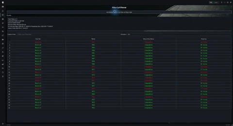
01 / Altus LotViewer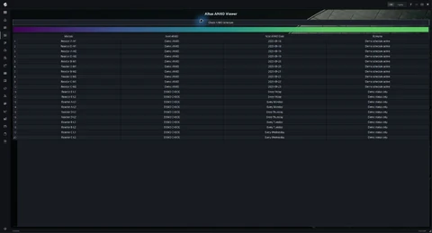
02 / Altus ANKO Viewer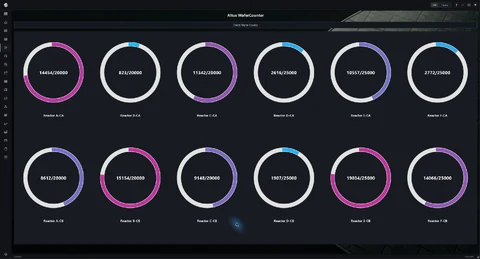
03 / Altus WaferCount04 / TopoTracer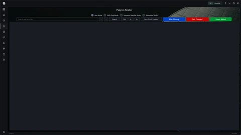
05 / Papyrus Reader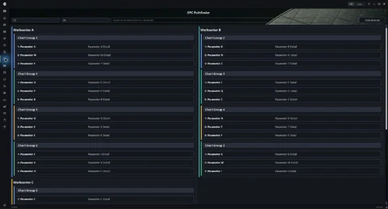
06 / SPC Pathfinder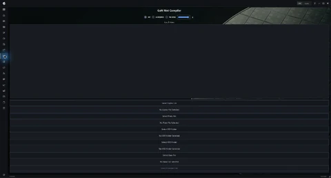
07 / GaN Met Compiler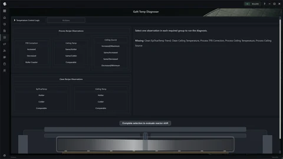
08 / GaN Temp Diagnoser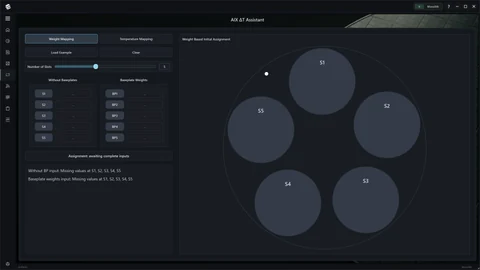
09 / AIX ΔT Assistant10 / LT Zone Assistant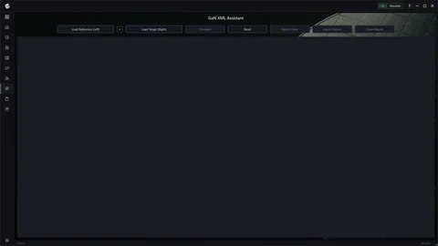
11 / GaN XML Assistant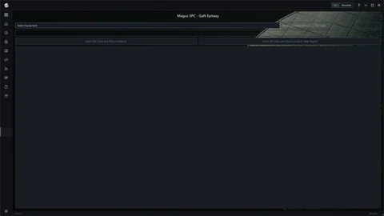
12 / Magus SPC (GaN)13 / Magus SPC (Legacy)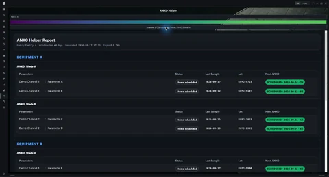
14 / ANKO Helper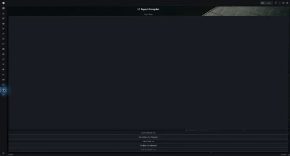
15 / LT Report Compiler16 / Metria SPCExpedition I / Altus
Lot history analysis.
Expedition I / Altus
ANKO schedule retrieval.
Expedition I / Altus
Wafer loading planner.
Expedition II / Interstice
Contour and topography plots.
Expedition II / Interstice
XML, EPI, and text reader.
Expedition II / Interstice
SPC chart finder.
Expedition III / GaN EPI
Metrology report compiler.
Expedition III / GaN EPI
Temperature drift diagnosis.
Expedition III / GaN EPI
Wafer-to-wafer dT checks.
Expedition III / GaN EPI
LayTec zone mapping.
Expedition III / GaN EPI
Devices.XML comparison.
Expedition IV / Planetfall
GaN SPC release review.
Expedition IV / Planetfall
Legacy SPC release review.
Expedition IV / Planetfall
ANKO status and due dates.
Expedition IV / Planetfall
LayTec report compilation.
Expedition IV / Planetfall
Interactive multi-parameter equipment SPC.
SIXTEEN APPLICATIONS. STILL EVOLVING.
A place for it all
to come together.
I enjoy building things.
ARTIFACTS is where they come together.

{kind=link}
{kind=link}
{kind=link}
{kind=link}
{kind=link}
{kind=link}
{kind=link}
{kind=link}
{kind=link}
{kind=link}
{kind=link}
{kind=link}
{kind=link}
{kind=link}
{kind=link}
{kind=link}